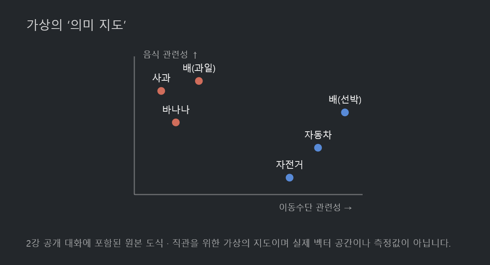
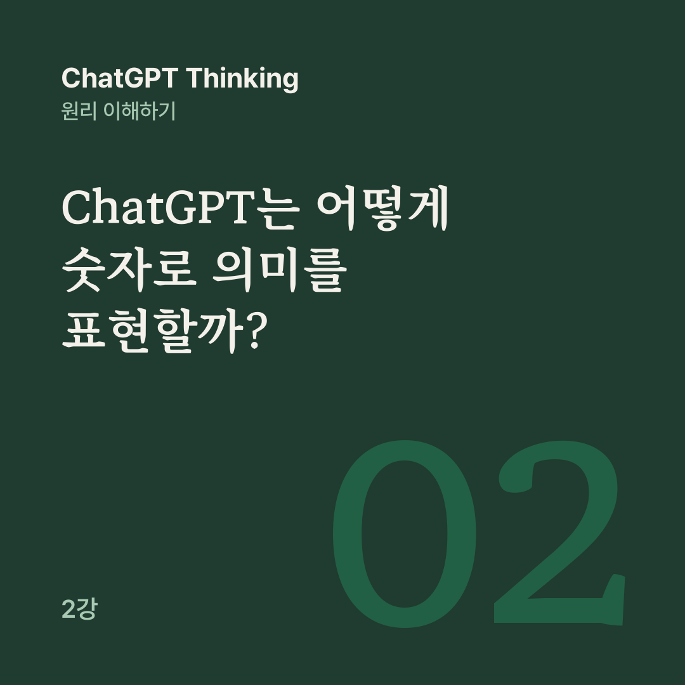

AI 원리 노트 · ChatGPT Thinking 2강
ChatGPT는 개념을 사람처럼 머릿속에 그림이나 사전 항목으로 저장하는 것이 아니라, 수많은 숫자의 상호작용을 통해 정보를 표현하고 처리합니다.
1강에서는 다음 단어를 예측하는 학습이 언어의 패턴과 논리적 관계까지 익히게 할 수 있다는 것을 봤습니다. 그런데 컴퓨터에는 결국 숫자와 계산만 있습니다. 그 숫자로 어떻게 ‘사과’, ‘사랑’, ‘정의’ 같은 개념을 다룰까요? 2강은 파라미터, 벡터, 어텐션으로 이 질문을 풉니다.
음악을 만드는 믹싱 콘솔에는 음량, 저음, 고음을 바꾸는 손잡이가 많습니다. 손잡이를 조금씩 돌리면 같은 악기의 소리도 달라집니다. ChatGPT의 파라미터도 비슷합니다. 모델 내부의 계산에 영향을 주는 숫자들이고, 학습하면서 조정됩니다.
고양이는 물고기를 ____.
처음에는 ‘운전한다’나 ‘건축한다’ 같은 엉뚱한 예측을 할 수 있습니다. 예측하고, 정답과의 차이로 오류를 계산하고, 숫자를 조금씩 고치는 일을 많은 데이터로 되풀이하면 점차 언어와 세상의 관계에 맞는 예측을 하게 됩니다.
파라미터 하나가 ‘고양이’라는 개념 하나를 저장하지는 않습니다. 수많은 숫자가 함께 복잡한 관계를 표현합니다. 수많은 손잡이의 조합으로 음악 한 곡이 만들어지는 것과 비슷합니다. 또 평소 대화할 때는 질문마다 파라미터를 다시 훈련하지 않고, 이미 학습한 숫자로 입력을 처리합니다.
서울과 부산은 지도 위에서 서로 다른 좌표를 갖고, 컴퓨터는 그 좌표로 두 곳의 관계를 계산할 수 있습니다. AI는 비슷한 생각을 단어의 의미에 씁니다.

2강 공개 대화에 실린 원본 도식입니다. 직관을 위한 가상의 2차원 지도로, 실제 AI의 벡터 공간이나 측정값을 나타내지 않습니다.
이 지도에서 ‘사과’, ‘배(과일)’, ‘바나나’는 서로 가깝고 ‘자동차’, ‘배(선박)’, ‘자전거’도 비슷한 영역에 모여 있습니다. 이렇게 여러 숫자를 묶어 하나의 위치나 특징을 나타낸 것이 벡터이고, 토큰을 벡터로 바꾼 표현을 임베딩이라고 부릅니다.
실제로는 좌표가 두 개가 아니라 훨씬 많은 숫자를 씁니다. 각 좌표축이 ‘음식 관련성’처럼 사람이 알아보기 쉬운 뜻을 갖는 것도 아닙니다.
맛있는 배를 한 입 베어 먹었다.
‘맛있는’, ‘베어 먹었다’ 같은 주변 단서가 있으면 ‘배’를 나타내는 내부 표현이 과일 쪽으로 달라질 수 있습니다. 처음의 토큰 표현이 문장을 처리하는 여러 층을 지나며 문맥에 맞게 바뀌기 때문입니다. 파라미터는 학습된 계산 규칙이고, 벡터는 그 규칙으로 처리하는 정보의 숫자 표현입니다.
민수는 영희에게 빨간 우산을 건네주었다. 비가 내리자 영희는 그것을 펼쳤다.
‘그것’이 무엇인지 물으면 우리는 자연스럽게 ‘우산’이라고 답합니다. ‘그것’과 이어지는 정보를 문장 속에서 찾아보기 때문입니다. AI도 문맥 속 여러 표현의 정보를 연결하는 계산을 하는데, 이것이 어텐션입니다.
실제 어텐션은 단어끼리 선을 긋는 방식이 아닙니다. 각 토큰에서 만든 숫자 표현을 비교해, 다른 위치의 정보를 얼마나 반영할지 계산합니다. 그래서 문맥이 달라지면 연결도 달라집니다. 같은 ‘배’라도 ‘먹었다’ 옆에서는 과일과 관련된 정보를, ‘탔다’ 옆에서는 선박과 관련된 정보를 활용할 수 있습니다.
배를 타고 바다에 나갔다.
이 문장을 받으면 모델은 먼저 토큰을 숫자 표현, 곧 벡터로 바꿉니다. 어텐션으로 ‘배’, ‘타고’, ‘바다’ 사이의 관계를 반영하고, 여러 계산층에서 학습된 파라미터로 표현을 계속 다듬습니다. 그 결과 ‘배’를 선박으로 해석한 답을 만들 수 있습니다.
실제로는 어텐션과 다른 계산이 여러 층에서 되풀이되고, 파라미터는 이 과정 전체의 계산에 쓰입니다. 트랜스포머는 어텐션 말고도 다른 신경망 연산을 함께 씁니다. 어텐션 하나가 모든 의미나 추론을 해결하지는 않습니다.
일반적인 데이터베이스는 정보를 항목별로 저장하고, 저장된 항목을 검색합니다. 항목을 직접 확인할 수 있고, 내용을 고치려면 데이터를 바꾸면 됩니다.
ChatGPT의 학습된 모델에서는 많은 관계가 파라미터에 흩어져 반영되고, 답은 학습된 계산을 거쳐 만들어집니다. 특정 지식이 어느 숫자에 있는지 떼어 내기 어렵고, 학습된 능력을 바꾸려면 별도의 학습이 필요합니다.
그렇다고 학습 자료를 전혀 기억하지 않는다는 뜻은 아닙니다. 일부 내용을 기억하거나 재현하기도 합니다. 다만 모델이 어떤 사실과 관련된 표현을 학습했더라도, 답을 만들 때 정확한 원문이나 검증된 기록을 조회한다고 보장할 수는 없습니다. AI가 틀릴 수 있는 이유가 여기서 이어집니다.
Thinking은 새로운 뇌가 생기는 것이 아니라, 학습된 모델이 더 많은 추론 단계를 활용하는 방식입니다.
파라미터는 학습된 계산 능력의 기반이고, 벡터는 문제와 중간 정보를 다루는 숫자 표현이며, 어텐션은 정보 사이의 관계를 계산합니다. Thinking은 이 기본 계산을 활용해 추론 과정을 더 거치게 합니다.
남는 질문이 있습니다. 숫자로 의미를 다룰 수 있다는 것은, 정말 그 의미를 이해한다는 뜻일까요? 다음 강의는 이 질문에서 시작합니다.
공개 대화의 2강을 블로그용으로 다시 편집했습니다.
